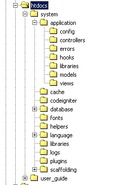
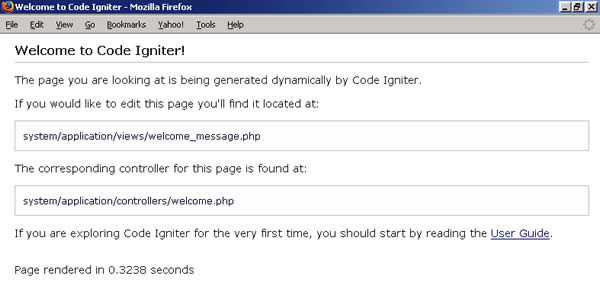

第二章 2 分钟：建立一个 CodeIgniter 网站
用 CI 建一个网站很容易。这一章很短，解释了用 CI 制作网站时发生了些什么，哪些文件被创建，让我们来瞧一瞧：
- 创建网站需要什么软件？
- 安装 CI 文件：一个简单的下载和解压缩操作。
- CI 的基本设置：有哪些文件夹及它们是如何组织的。
- CI 安装时默认的控制器和视图。
- 一些简单的修改来演示 CI 如何运作。
2.1 准备知识
CodeIgniter 有较好的版本兼容性。它工作在 PHP 4.3.2 及以上版本，或 PHP 5。由于大多数 ISP 还不支持 PHP 5，支持 PHP 4 版本是有用的。
你还需要一个数据库。CI 的在线手册说：“已支持的数据库是 MySQL、MySQLi、MS SQL、Postgre、Oracle、SQLite 和 ODBC。”
为了要开发并测试一个动态的网站，你需要一个 Web 服务器。通常，你会在本地服务器上开发并测试你的网站，也就是，这些软件运行在你自己的机器上（127.0.0.1 或 localhost）， 一般来讲，开发环境不会建立在远程服务器上。
如果你不熟悉如何分别建立本地开发环境，可以选择一个套装软件，像是 Xampplite，安装 Apache、PHP 和 MySQL 几乎不需要修改配置文件。Xampplite 是免费的，有简单易懂的安装指南。或者，某些版本的 Windows 附带自己的 Web 服务器。
你还需要一个称心的 PHP 编辑器。所有的编码工作都可以在文本编辑器中完成。提供语法加亮特性和自动补齐功能的编辑器会更理想一些，因为它可以帮助一般水平的程序员节约时间。
一旦你做好了这些准备工作，我担保你在2分钟内就可以搞定 CI 安装工作
2.2 安装 CodeIgniter
再次声明，CI 是完全免费的！
建立好开发环境后，访问 CodeIgniter 网站：http://www.codeigniter.com/ 并下载最新版的框架。1.5.3 版是最新版（译注：编写此书时的最新版是 1.5.3），是一个只有 737KB 的压缩文件，几秒种就可以下载完成。
解压缩这个文件，把它释放到网站根目录中。如果你正在使用 Xampplite，通常在 Xampplite 文件夹里面的 htdocs 文件夹中。
CodeIgniter 的 index.php 文件应该在根目录中。这时，如果你在浏览器上打开 http://127.0.0.1 你也就实际打开了此文件。我们用 1-2 分钟的时间来建立一个可运行的网站！
和 CI 包含在一起是一个简单易懂的用户手册。（在 user_guide 文件夹中）你将会经常用到它。它的内容很详细，细过这篇文章，所以，需要时，请经常查阅它。
当这些文件保存在你的机器上的时候，有两个方法来访问它们：
- 通过 URL，http://127.0.0.1
- 经过正常的目录路径：例如 C:/xampplite/htdocs/index.php
你应该通过浏览器访问 CI 的默认首页。真是简单！默认首页传递给你一个信息：你将看到的内容由两个文件组成：视图和控制器。
2.3 分析文件结构
安装 CI 文件后，我们来看一下目录结构。
你的根文件夹现在应该看起来有点像下面的图表。如果你曾经看过 Rails，这个结构将会看起来非常熟悉。
你能把这些文件夹分为三个小组：
- application 是你自己的项目存放文件的目录（举例来说，控制器、模型和视图：全部在 application 文件夹中）。除了你刚才见到的 welcome 视图和控制器，这些文件夹都是空的。
- 在 system 文件夹中的文件是 CI 本身的代码。（system/libraries、system/codeigniter、system/drivers 等）。如果你愿意，你可以研读它们，或者改变他们―不过要等到你了解了 CI 是如何工作的，才能这么做。而且如果你改变了框架内的代码，记住，当你下载了 CodeIgniter 新版本时，备份它们，否则，新的版本会覆盖它们。当然，你也可能不需要自己修改代码而直接使用 CI 本身的代码，Rick 写的代码应该是很不错的。
- 还有一些文件夹中已包含了文件，但是，可能需要增加或修改（如：language、config、errors）。这些文件夹被设置为默认的，但你可以修改它们。

2.4 配置文件
还记得我们要花 2 分钟建立我们的网站吗？第 2 分钟要用来做一些基本的设置。
config 文件夹包含了一些为你的网站设定基本配置的文件。打开 config/config.php 文件告诉网站应该在哪里找到它自己的结构和配置信息。文件的第一行一般是这样的：

/* |------------------------------------------------ | Base Site URL |------------------------------------------------ | | URL to your Code Igniter root. Typically this | will be your base URL, WITH a trailing slash: | | http://www.your-site.com/ | */ $config['base_url'] = "http://127.0.0.1/"; /*
注意 CI 的注释多详尽啊！
修改引号中的数据以匹配你网站的根目录。如有疑问，请查询在线手册以得到详细指导。
作为一项基本的原则，使用 config.php 文件储存关于你网站的信息好过散布在你项目的不同文件中。这样做有几个好处：首先，更新比较容易；其次，当你把项目从开发服务器转移到实际存放的服务器时，修改配置较容易；最后，许多 CI 函数会首先在配置文件中寻找需要的信息。
还有其他的 config 文件存放在 config 文件夹中，但是目前你可以放心地使用它们而不用修改它们的默认值。
这就是2分钟内运行 CI 所需要做的第二件事儿。在这一章的余下部分，我们将会上我们刚做好的网站去逛逛。
2.5 它能工作吗？
验证网站能否正常工作的一个简单方法就是打开你的浏览器。假定你正在本地服务器的根文件夹中运行它，在地址栏输入：http://127.0.0.1，你能看到网站的默认页面：

看到默认页面意味着你的网站正常运行了。不需要 2 分钟，对吗？
2.6 总结
在本章节中，我们已经见到，安装 CI 是多么容易。一旦建立好你的开发环境，你所需要做的是下载 CI 框架文件、解压并复制到一个目录而已。
随后，我们快速浏览了 CI 的目录结构。
这一章节非常短，因为 CI 容易安装，不需要太长的篇幅。其实其它章节也不长，因为 CI 的确很简单易懂，节约时间。